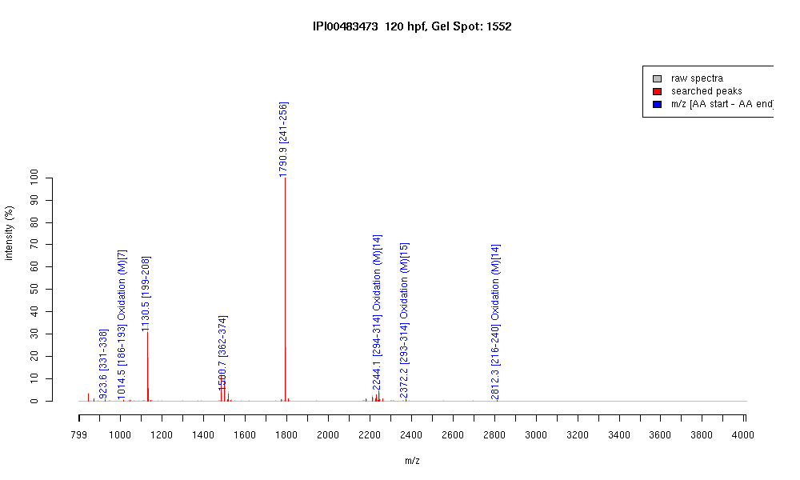

| Name | "Actin, alpha 2, smooth muscle, aorta" |
|---|---|
| MW | 42027.8 |
| PI | 5.23 |
| Mascot Protein Score | 150 |
| Masses (matched / unmatched) | 8 / 31 |

| Peptide | MZ (calc) | MZ (observed) | Error (DA) | Error (PPM) | Start | Stop | Modifications |
|---|---|---|---|---|---|---|---|
| IIAPPERK | 923.5672 | 923.575 | 0.0078 | 8 | 331 | 338 | |
| DLTDYLMK | 1014.4812 | 1014.4794 | -0.0018 | -2 | 186 | 193 | Oxidation (M)[7] |
| GYSFVTTAER | 1130.5476 | 1130.5457 | -0.0019 | -2 | 199 | 208 | |
| QEYDEAGPSIVHR | 1500.7078 | 1500.692 | -0.0158 | -11 | 362 | 374 | |
| SYELPDGQVITIGNER | 1790.8918 | 1790.8901 | -0.0017 | -1 | 241 | 256 | |
| DLYANNVLSGGTTMYPGIADR | 2244.0601 | 2244.0657 | 0.0056 | 2 | 294 | 314 | Oxidation (M)[14] |
| KDLYANNVLSGGTTMYPGIADR | 2372.155 | 2372.1672 | 0.0122 | 5 | 293 | 314 | Oxidation (M)[15] |
| EKLCYVALDFENEMATAAFSSSLEK | 2812.3054 | 2812.3059 | 0.0005 | 0 | 216 | 240 | Oxidation (M)[14] |